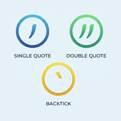

シングルクォートかダブルクォートどっち？

- プロンプト例
JavaScriptで文字列を利用するときにシングルクォートかダブルクォートどっち？
🔍 どっちを使うべき？
結論：プロジェクトで統一されている方を使う
- JavaScript の仕様としては違いはありません
- ESLint や Prettier で 自動統一するのが一般的
✔ よく使われるのは シングルクォート（'）
- 理由はシンプルで、
- タイピングが楽
- JSON と区別しやすい（JSON はダブルクォート必須）
- 多くのスタイルガイド（Airbnb など）が ' を推奨
✔ ダブルクォート（"）を使う場面
- HTML 属性を書くときに合わせたい場合
- 他の言語（Python、Java など）と統一したい場合
- プロジェクトのルールが " の場合
✔ テンプレート文字列（`）を積極活用（超おすすめ）
- 変数埋め込み・複数行 → バッククォート（テンプレートリテラル）
✔ 可読性
✔ 改行OK
✔ 文字列連結が不要
現代JavaScriptでの主流
多くの現場では：
シングルクォート ' + テンプレートリテラル `
の組み合わせが主流です。
結論まとめ
| ケース | おすすめ |
|---|---|
| 通常の文字列 | 'シングルクォート' |
| 変数埋め込み | `テンプレートリテラル` |
| 中に「'」を含む | "ダブルクォート" |
📝 JavaScript console出力 練習問題（5問）
問題1：基本の出力
「こんにちは」と console に表示してください。
// ここにコードを書く
問題2：変数を使った出力
変数 name に「Taro」を代入し、
「私の名前は Taro です」と console に表示してください。
const name = 'Taro'; // ここにコードを書く
問題3：文字列連結
変数 food に「りんご」を代入し、
「好きな食べ物は りんご です」と console に表示してください。
const food = 'りんご'; // ここにコードを書く
問題4：テンプレートリテラル
変数 age に 20 を代入し、
「年齢は 20 歳です」と console に表示してください。
※ テンプレートリテラル（`）を使うこと
const age = 20; // ここにコードを書く
問題5：複数行の出力
以下のように 2行で console に表示してください。
おはようございます 今日もがんばりましょう
// ここにコードを書く
console出力 練習問題 解答
問題1（テンプレートリテラル）
console.log(`こんにちは`);
問題2（テンプレートリテラル）
const name = "Taro"; console.log(`私の名前は ${name} です`);
問題3（テンプレートリテラル）
const food = 'りんご'; console.log(`好きな食べ物は ${food} です`);
問題4（テンプレートリテラル）
const food = 'りんご'; console.log(`好きな食べ物は ${food} です`);
問題5（複数行）
console.log(`おはようございます 今日もがんばりましょう`);